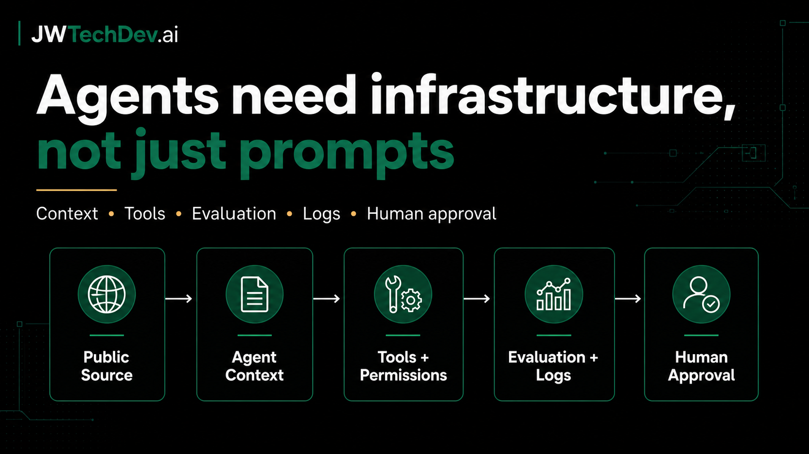

Agents need infrastructure, not just prompts
A JWTechDev.ai POV on AWS AgentCore, AgentOps, MCP, and A2A as public signs that AI agents are becoming infrastructure systems, not just prompt demos.

Quick answer
AI agents need infrastructure around prompts: current context, tool permissions, evaluation, logs, and human approval.
The Short Version
The AI agent conversation is starting to shift.
For a while, most of the internet focused on the impressive part:
Look what this agent can do.
That is still fun. It is also not enough.
The better enterprise question is:
How does this agent safely know what to do, who it can talk to, what tools it can use, and how we know whether it made a good decision?
That is why the recent public movement around AgentOps, MCP, and A2A is worth paying attention to.
AWS AgentCore shows the grounding problem
AWS announced that Web Search on Amazon Bedrock AgentCore is generally available. The point is simple: agents need current information, but they need it through a managed path.
The feature lets agents ground responses in current, cited web knowledge through AgentCore Gateway using the Model Context Protocol, or MCP.
That matters because the useful pattern is not just:
- ask the model a question
- hope the answer is current
- paste it somewhere important
The better pattern is:
- give the agent a managed way to retrieve current information
- return source URLs and publication dates
- keep the tool inside a governed environment
- let the model reason over retrieved context
- review the output before high-impact action
That is not magic. That is infrastructure.
AgentOps is the production discipline
AWS has also been writing about AgentOps as the operating model for agentic AI in production.
The useful framing is that agents create different operational problems than normal software. They can make decisions, call tools, behave non-deterministically, and create cost or quality surprises if nobody is watching the full system.
AWS groups AgentOps around four pillars:
- governance and security
- build and operations
- evaluation
- observability and monitoring
That list is worth studying because it turns AI agents from a demo into something you can reason about.
When a team says it wants agents, the follow-up questions should sound a lot like cloud infrastructure questions:
- What can the agent access?
- What tools can it call?
- What data leaves the system?
- What gets logged?
- How are outputs evaluated?
- What happens when quality drops?
- Which actions need human approval?
That is the layer builders should be learning.
A2A shows the interoperability problem
The Linux Foundation now hosts the Agent2Agent project, originally created by Google. The project focuses on secure communication and collaboration between agents across platforms, vendors, and frameworks.
The A2A project points at a bigger pattern: the future is probably not one giant agent doing everything.
It is more likely to be many specialized agents that need to:
- discover each other
- understand capabilities
- delegate tasks
- exchange artifacts
- support long-running work
- collaborate without exposing internal memory, tools, or implementation details
That is an interoperability problem.
It starts to look less like chat and more like distributed systems.
My POV
The next durable AI skill is not just prompt writing.
Prompting matters, but it is only one layer.
The durable skill is understanding the infrastructure around the prompt:
- how agents get current context
- how tools are exposed safely
- how agents communicate
- how outputs are evaluated
- how actions are logged
- where humans still approve high-risk steps
That is the part more builders should study.
The future is not one magical agent.
It is a governed system of agents, tools, data, approvals, and observability.
That is a much more useful thing to learn.
Sources checked
Want the working resource?
Start with the Cloud Infrastructure First Map before giving an AI workflow access to real systems.
Get resources